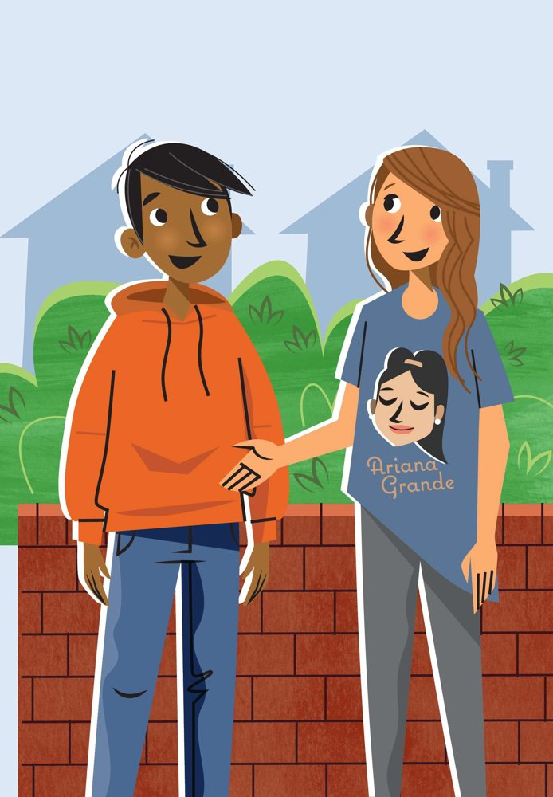
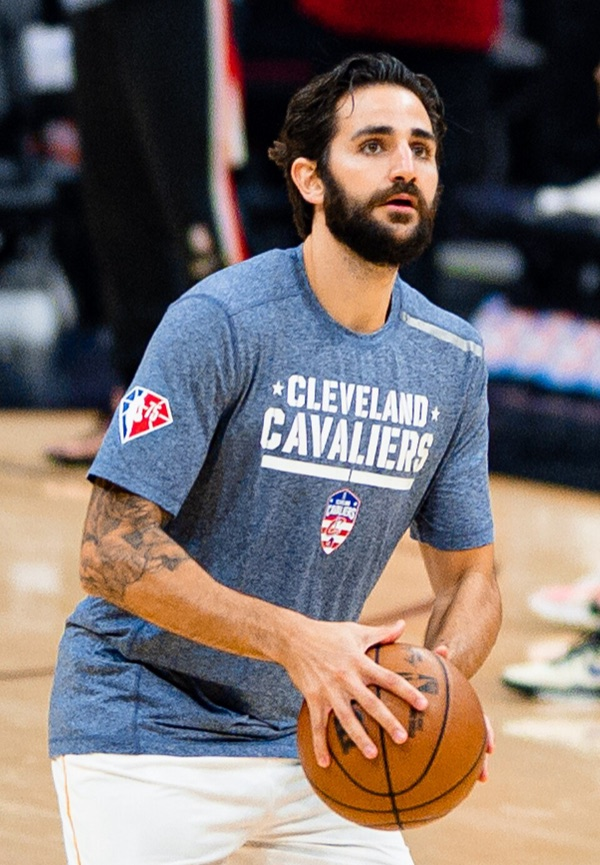
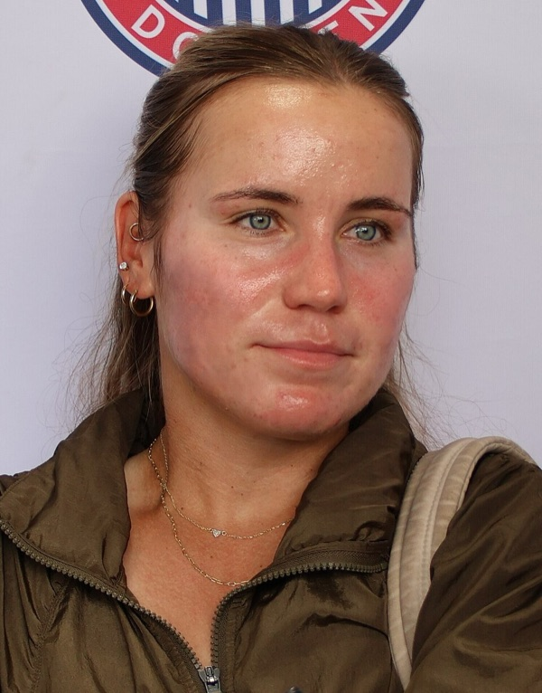
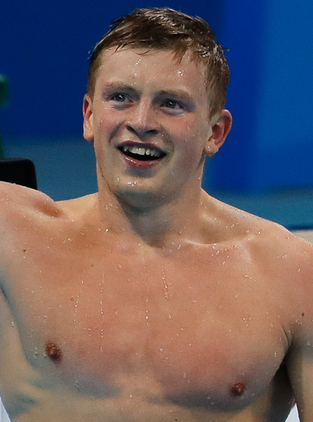

A Lesson 9 quiz show, football stars, a dialogue about music, how to get to know someone, and the sound e.
| Warm-up | 8–10 min | Quiz show (L9 review) + make the questions |
| Nice to meet you! | 30–35 min | Football warmer → reading 1.06 → T/F → questions → functions 1.07 → act out → own dialogue |
| Read it right: e | 10–12 min | Steps 1–3 in class; 4–5 can be finished at home if time is short |
| Homework | 2 min | Show the Homework tab: Workbook p. 14, reading Ex. 1–3 (Teacher’s Book: THINK more → Workbook Reading p14 Ex.1–3) |
Aims (Teacher’s Book T16): Reading a dialogue for gist and detail; Functions: getting to know someone (What’s your name? Where are you from? Nice to meet you (too).).
Every round has 5 questions. A right answer = 2 points, a fast answer = +1 bonus ⚡. A wrong tap costs the bonus, so think first!
Перетащи слова (или нажми на слово, а потом на место, куда его поставить). Вопросительное слово идёт первым.
Сначала скажи вслух: This is … . He’s / She’s … — потом выбирай.
He’s .
Photo: Bryan Berlin, CC BY-SA 4.0He’s .
Photo: Bryan Berlin, CC BY-SA 4.0He’s .
Photo: Bryan Berlin, CC BY-SA 4.0She’s .
Photo: Pedro J Pacheco, CC BY-SA 4.0He’s .
Photo: Bryan Berlin, CC BY-SA 4.0
1. Which singer is on the girl’s T-shirt?
2. Who knows more about music, Steve or Camila?
Не страшно, если понятны не все слова. Слушай только ответы на два вопроса.
Nice T-shirt.
CamilaThank you. It’s Ariana Grande.
SteveI know. I’m an Ariana Grande fan, too. So, what’s your name?
CamilaCamila. And what’s your name?
SteveI’m Steve.
CamilaNice to meet you, Steve.
SteveNice to meet you, too, Camila. Where are you from?
CamilaI’m from Spain. I’m from a small town called Teruel.
SteveSpain is a beautiful country.
CamilaYes, it is. Who’s your favourite singer?
SteveUmm … er … well, it’s that British guy, Shawn Mendes.
CamilaShawn Mendes?
SteveYes, he’s great.
CamilaYes, he is. But he isn’t a British singer.
SteveNo?
CamilaNo! He’s from Canada!
SteveOh!
CamilaI need to go now. Bye, Steve.
SteveOh, OK! Bye!
1. Q:
A: I’m Steve.
2. Q:
A: I’m from a small town called Teruel.
3. Q:
A: Shawn Mendes.
First you are Manuel and your teacher is Anna. Then swap. Try not to look!
Придумай свой диалог знакомства. Можно быть собой — или футболистом из шага 1!
Short, mouth a little open, a small smile. It is the e in German Bett, Hemd, essen.
…but it has a job: it makes the vowel before it say its name. a → “ay”, i → “eye”, o → “oh”, e → “ee”.
1. Is it a cat? No, it is not a cat. You can sit in it. You can nap in it. You can set it up at a campsite.
2. It is not an ant. It is not a pot. It is thin. It has ink in it. You can tap it on a desk.
3. It is not a cat. It is not a pen. It can spin and spin and spin… and then it stops.
4. It is not six. It is not a pet. It is five plus five.
5. You can see it in tennis. It is not a cap. It has lots of big holes in it.
6. A cat, a dog, a rabbit: each one can be a…
Record yourself reading your riddle. Can your teacher guess it?
What’s your name?
GirlMy name’s Alicia.
Boy1 are you from?
GirlFrom Galicia.
Boy2 is that?
GirlIt’s in Spain.
Boy3 old are you?
GirlI’m ten plus two.
Boy4 ’s your best friend?
GirlI’ve got two, not one.
Boy5 is that?
GirlThey’re both fun!
Rap along! Play the video again, turn the sound off and rap the boy’s part — or both parts. Record yourself.
1. Which words do we use to make questions?
2. Complete the questions.
are you?
’s your name?
are you from?
’s your favourite singer?
is she your favourite singer?
What’s your best friend’s 1 ?
PennyHer name’s Maria.
Fiona2 ’s she from?
PennyShe’s from Quito in Ecuador.
Fiona3 ’s your favourite musician?
PennyEd Sheeran.
FionaWhere is he 4 ?
PennyHe’s from London.
FionaHow 5 is he?
PennyHe’s 30 years old.
Fiona6 is he your favourite musician?
PennyBecause he’s great.
athlete — спортсмен(ка).
Hi, my name’s Hugo. I’m Mexican. I’m from Acapulco. I’m 12 years old. My favourite athlete is Ricky Rubio. He’s Spanish. He’s a basketball player in the NBA. He’s great.

My name’s Maddison. I’m ten years old. I’m Canadian, from Vancouver. My favourite athlete is Sofia Kenin. She’s a tennis player. She’s from the US. She’s awesome!

Hi, I’m Yusuf. I’m 13 years old. I’m Turkish. I’m from Ankara, the capital. My favourite athlete is Kylian Mbappé. He’s a footballer from Paris, in France. He’s an amazing player.
Hi there! My name’s Mia. I’m 12 years old. I’m South African, from the city of Cape Town. My favourite athlete is Adam Peaty. He’s a swimmer from the UK. He’s really fast.

My name’s Gabriella. I’m 11 years old. I’m British, from London. I think my favourite athlete is Dina Asher-Smith. She’s a runner in the 100m and 200m races. She’s also from London, and she’s really fast!
1. What’s his / her name?
2. What sport does he / she do?
3. Where is he / she from?
4. Why is he / she your favourite athlete?
Say it too: record your four answers as a little talk: My favourite athlete is …
Отметь всё, что уже получается!